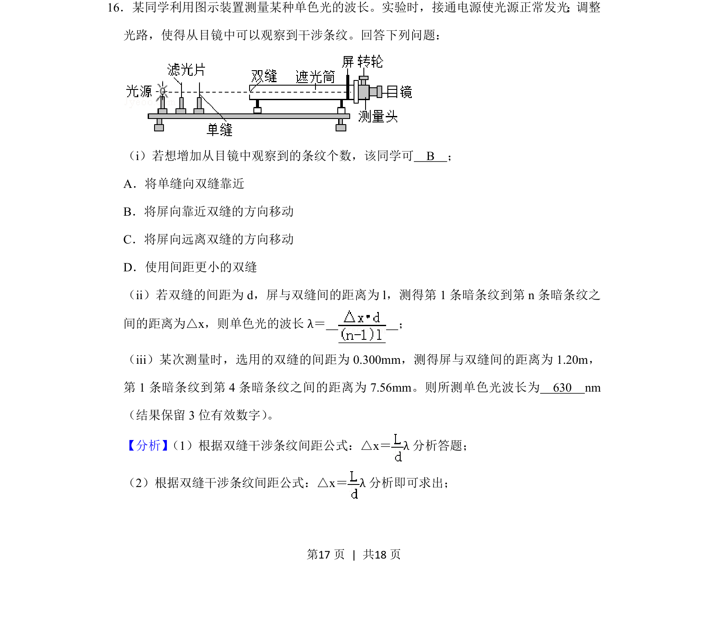
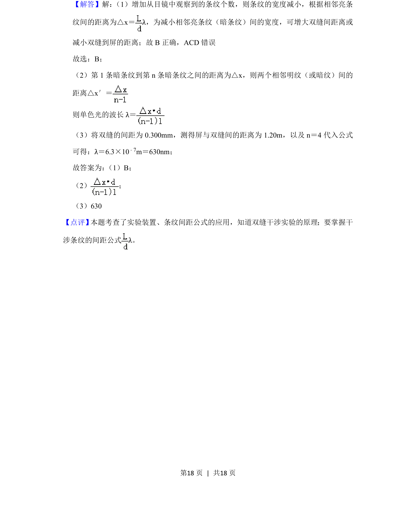

考点：双缝干涉 条纹间距公式 波长

该题考查双缝干涉实验操作、条纹数量变化分析及波长计算。

📄 原 PDF 第 17 页：
素材/真题/吉林/2008-2024·（吉林）物理高考真题/2019年高考物理试卷（新课标Ⅱ）（解析卷）.pdf
16．某同学利用图示装置测量某种单色光的波长。实验时，接通电源使光源正常发光；调整 光路，使得从目镜中可以观察到干涉条纹。回答下列问题： （i）若想增加从目镜中观察到的条纹个数，该同学可 B ； A．将单缝向双缝靠近 B．将屏向靠近双缝的方向移动 C．将屏向远离双缝的方向移动 D．使用间距更小的双缝 （ii）若双缝的间距为d，屏与双缝间的距离为l，测得第1条暗条纹到第n条暗条纹之 间的距离为△x，则单色光的波长λ＝ ； （iii）某次测量时，选用的双缝的间距为0.300mm，测得屏与双缝间的距离为1.20m， 第1条暗条纹到第4条暗条纹之间的距离为7.56mm。则所测单色光波长为 630 nm （结果保留3位有效数字） 。
【分析】 （1）根据双缝干涉条纹间距公式：△x＝λ分析答题； （2）根据双缝干涉条纹间距公式：△x＝λ分析即可求出；